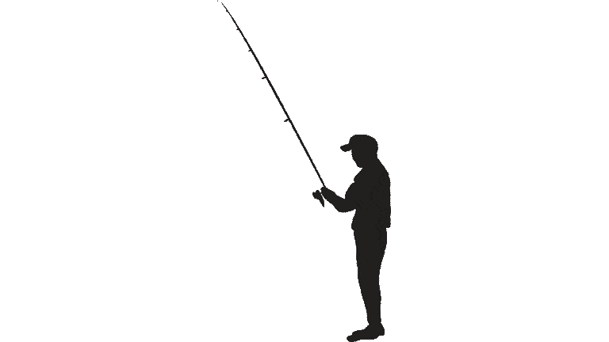

Що таке рибальство?
Рибальство - це переважно додаткове заняття, яким люди займаються у вільний час. Проте так було не завжди.
В давні часи, ловля риби була необхідна для того, щоб мати вдома їжу, і тому, люди проводили біля річок багато часу лиш для того щоб мати змогу прокормити свою сім'ю. З часом необхідність в ловлі риби для прокормлення ставала все меншою, адже люди почали більше уваги приділяти їжі, яку вони вирощували, проте рибні страви нікуди не ділися.
На сьогоднішній день рибальством займаються більше для задоволення. Не дивлячись на те, що рибу продовжують ловити для використання в різних стравах, люди які це роблять, зазвичай виконують це сітками, щоб виловити велику кількість риби за раз. Для інших ж людей, це просто заняття для душі. Проте існує і спортивна риболовля, де вся виловлена риба одразу відпускається назад у воду попереднью сфотографувавши та зваживши свій результат тим, хто її виловив.
Рибальство на Вінниччині
На Вінниччині поширені всі риби вилову риби, рибалки можуть ловити рибу як для використання в їжі так і в спортивних цілях. Існує багато водойм, які різняться по доступу до них, та по рибі, яка в них водиться.
Водойми можна поділити на платні та безкоштовні. В платні водойми рибу запускають їх хозяїни, які викупили права на володіння водоймою. За ловлю риби в таких місцях потрібно платити. Плата знімається або за вагу виловленої риби або за час, проведений на місці. На безкоштовних водоймах може ловити рибу хто завгодно, але риби там, зазвичай, менше ніж в платних